Module 11 Nonlinear models
Many biological processes and phenomena are related in ways that do not form straight lines. What this really means is that rates of change are not constant. While linear models and the assumption of linearity are powerful ways to think about and analyze biological phenomena, they are not always appropriate. This module will introduce you to some ways of exploring situations where one quantity does not scale as a constant proportion of another.
11.1 Background
So far we have learned about a wide variety of linear models, generalized and otherwise. Linear models predict some response variable Y as a linear function of one or more predictor variables X. A linear function is one that can be written in the form \(Y=mX+b\), where m and b are constants. The scalar m defines how much Y changes for every unit increase in X (i.e., if X increases by 1, then Y increases by m). In order for the relationship to be a straight line, the change in Y resulting from a change in X does not vary. In other words, the slope of the line (\(dY/dX\)) is a constant. This is what “linear” means.
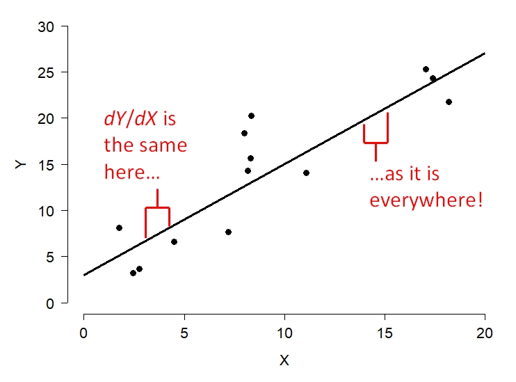
Some relationships do not follow such a rule. Consider the relationship below. Is the slope constant?
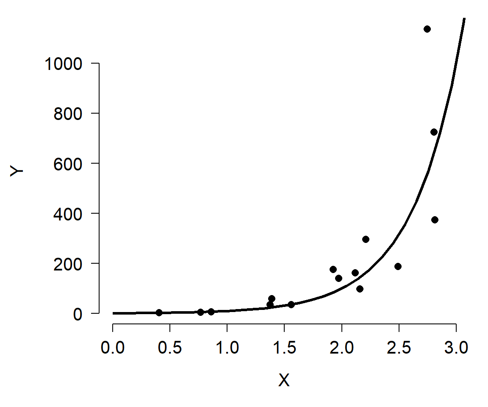
As shown, the relationship between Y and X is nonlinear because the slope of the line is different at different X. However, we can linearize the relationship by taking the logarithm of Y. Compare the left panel below to the right panel. All that has changed is the y-axis scaling.
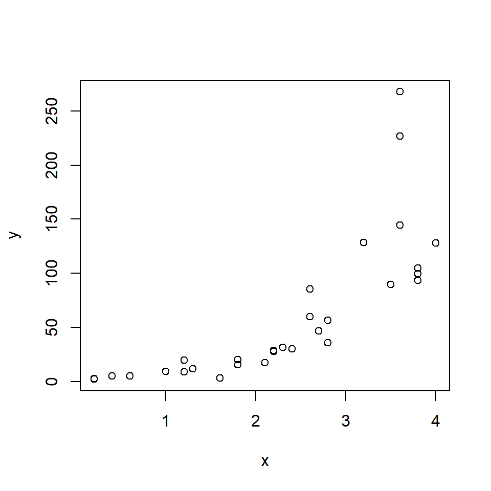
Other relationships are not amenable to this kind of transformation. For example, the figure below shows Y varying as a Gompertz function of X. Unlike the log-linear model shown above, there is no transform that will turn the Gompertz curve into a straight line. So, if we wanted to analyze data that followed such a pattern, we would need a different set of tools.
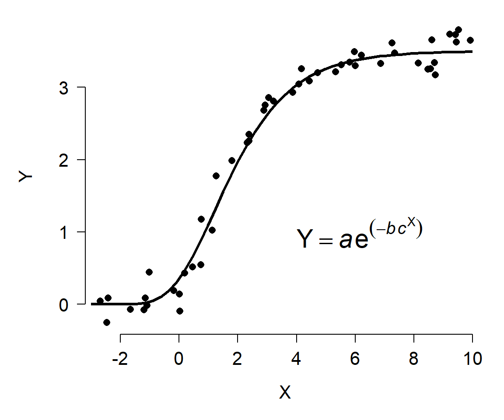
11.2 Nonlinear least squares (NLS)
The basic nonlinear least squares (NLS) model has some parts in common with the basic linear regression model (LM). In the state-space GLM notation, we can see that the relationship between the observed Y variables and the expected value \(\mu\) is the same as in the LM. However, the relationship between the expected value and the predictor variables is not the same.
| Component | Linear model (LM) | Nonlinear model (NLS) |
|---|---|---|
| Stochastic part | \(Y~Normal\left(\mu,\ \sigma^2\right)\) | \(Y~Normal\left(\mu,\ \sigma^2\right)\) |
| Link function | \(\mu=\eta\) | \(\mu=\eta\) |
| Expected value | \(\eta=\beta_0+\beta_{1}X\) | \(\mu=f(X,\theta)\) |
In the NLS model, as with LM, the response variable Y is drawn from a normal distribution with mean \(\mu\) and variance \(\sigma^2\). Also like LM, the mean \(\mu\) is identical to the predictor \(\eta\). Unlike LM, in NLS the expected value \(\eta\) is not a linear function but instead a function \(f\)* of the explanatory variable X and some vector of parameters \(\theta\). The function \(f\left(X,\ \theta\right)\) can be any number of functions. In the case of a linear model, the parameters \(\theta\) are the intercept and slope. If \(f\left(X,\ \theta\right)\) is a linear function, then the NLS model simplifies to a linear model.
The equations above show an important assumption of NLS: the errors are normally distributed with constant variance. In some cases, the function \(f\left(X,\ \theta\right)\) can be transformed to make it linear. However, doing so will likely make the errors non-normal or heteroscedastic, which means that the LM on transformed data wouldn’t be appropriate anyway.
There are several methods of fitting NLS models. Unlike LM, where it is relatively straightforward to solve some linear algebra problems and get stable parameter estimates, in NLS the parameters must be approximated by searching the parameter space (i.e., set of possible values) for \(\theta\) that minimize the sum of squared residuals. The methods for computing these estimates are extremely complicated and sensitive to starting inputs, and we won’t go into them here. Bolker (2008) gives an overview of some of these methods.
11.3 Michaelis-Menten curves
The Michaelis-Menten model is a nonlinear model that is usually used to describe processes that grow and approach an asymptote. One of the classic applications is modeling the relationship between biochemical reaction rates and substrate concentrations. The Michaelis-Menten equation takes the general form
\[Y=\frac{aX}{b+X}\]
where a and b are constants.
- a defines the asymptote: the maximum Y value that is approached but never reached.
- b is the Michaelis constant. It represents the X value at which \(Y = a/2\). Interestingly, for any proportion of the form \(c/(c+1)\), where c is a positive integer, the X value where \(Y = (c/(c+1))a\) is \(cb\). For example, the X value when \(Y = (3/4)a\) is \(3b\).
The Michaelis-Menten curve goes by many names. In enzyme kinetics and biochemistry, it is called the Michaelis-Menten curve. Biologists also sometimes call it the Monod function, the Holling type II functional response, or the Beverton-Holt model (the latter name is probably the most common alternative to Michaelis-Menten). This diversity of application speaks to the generality of this function. The original definition predicted a reaction rate. However, Michaelis-Menten curves can also be used to model other phenomena. For example, Kunz et al. (2019) and Green et al. (2020) used Michaelis-Menten curves to model the effectiveness of biodiversity monitoring programs.
11.3.1 Example with simulated data
For our simulated example, we will use parameters from the R help page for SSmicmen(), one of the utility functions for working with Michaelis-Menten models.
set.seed(123)
# x values: concentrations in [0.02, 1.28] ppm
x <- rep(2^(1:7)/100, each=3)
# define model parameters
## Vm = a = asymptote
## K = b = Michaelis constant
Vm <- 210
K <- 0.06
# expected values
y <- (Vm*x)/(K+x)
# add residual variation
y <- y + rnorm(length(x), 0, 10)
# plot data
plot(x,y, ylim=c(0, max(y)),
xlab="Substrate conc. (ppm)",
ylab="Reaction rate",
pch=16, cex=1.2)
The R function that fits nonlinear least squares model is nls(). Like lm() and glm(), nls() has a formula interface to specifying models and produces an object that contains many of the diagnostics you need to evaluate your model. Unlike lm() and glm(), nls() usually needs to be supplied starting values for model parameters. These values are used as starting points for the numerical optimization algorithm. There are two basic ways to supply starting values. For some models you can use a “self-starting” model that will guess at good starting values. The other way is for you to guess.
The command below shows how to use the “self-start” Michaelis-Menten model. The righthand side of the formula is the function SSmicmen() (“self-starting Michaelis-Menten”) instead of the model equation. The arguments to a self-start function are usually the predictor variable followed by the names you want to use for the terms in the model. The order of those names matters, because R will use them in the order you provide them. Below we use the default names Vm and K, which R interprets as the asymptote (“Vmax” or “V-max”) and Michaelis constant, respectively. When using the Michaelis-Menten model for something other than enzyme kinetics, I prefer to use a and b instead of Vm and K82.
# method 1: fit with self-start models
mod1 <- nls(y~SSmicmen(x, Vm, K))
# same but with different parameter names:
mod1.v2 <- nls(y~SSmicmen(x, a, b))
summary(mod1.v2)##
## Formula: y ~ SSmicmen(x, a, b)
##
## Parameters:
## Estimate Std. Error t value Pr(>|t|)
## a 2.080e+02 4.499e+00 46.23 < 2e-16 ***
## b 5.640e-02 4.995e-03 11.29 7.21e-10 ***
## ---
## Signif. codes: 0 '***' 0.001 '**' 0.01 '*' 0.05 '.' 0.1 ' ' 1
##
## Residual standard error: 10 on 19 degrees of freedom
##
## Number of iterations to convergence: 0
## Achieved convergence tolerance: 2.333e-07If you are fitting a curve for which there is no self-start method, or the self-start method doesn’t work, or if you enjoy reading error messages, you will need to supply starting values. Coming up with good starting values is part art, part science, and part random guessing. For many models you can often estimate some values by thinking about what they represent. For our Michaelis-Menten example, we can see that the curve stops increasing once it gets up to about Y = 200 or so. Thus, 200 might be a good guess for the asymptote (Vm in our code). Likewise, we can see that Y reaches half of its asymptotic value at around X = 0.05. So, 0.05 is probably a decent guess for the Michaelis constant K.
For models with more parameters, you can often guess at 1 or 2 parameters based on the scatterplot, then pick a few representative points and solve for other parameters. For example, if we had guessed that \(V_{max}\) might be 200, we could pick some points from our data and solve for K, conditional on \(V_{max}\) = 200. Below we calculate test.k, which contains estimates of K conditional on Vm = 200. The mean or median of that vector is a good guess for a starting value of K.
## [1] 0.042005Use these estimates as starting values to nls(). Notice that because we are not using a self-starting model, we must define the model equation manually. The variable names that you use in the formula must match the variable names in the list of starting values exactly. This includes capitalization!
The second example is just to “eyeball” some starting values. In the case of the Michaelis-Menten model this is easy. \(V_{max}\) can be estimated as the maximum value or just above it, while K is the X value at which Y is about half of \(V_{max}\). As long as your guesses are in the right ballpark, nls() should be able to find good estimates.
# method 2: eyeball some starting values
start.list <- list(Vm=200, K=0.042)
mod2 <- nls(y~(Vm*x)/(K+x),
start=start.list)
summary(mod2)##
## Formula: y ~ (Vm * x)/(K + x)
##
## Parameters:
## Estimate Std. Error t value Pr(>|t|)
## Vm 2.080e+02 4.499e+00 46.23 < 2e-16 ***
## K 5.640e-02 4.995e-03 11.29 7.21e-10 ***
## ---
## Signif. codes: 0 '***' 0.001 '**' 0.01 '*' 0.05 '.' 0.1 ' ' 1
##
## Residual standard error: 10 on 19 degrees of freedom
##
## Number of iterations to convergence: 4
## Achieved convergence tolerance: 2.98e-07Both methods estimated parameters that were close to the true values. The coefficients table can be presented in much the same way that the coefficients table for a linear regression or GLM is presented. Unlike linear models, there is no straightforward way to calculate an R2 value for nonlinear models. This is because of two key differences between nonlinear models and linear models:
- Nonlinear models do not have an intercept term, which is implicit in the R2 calculation in linear models.
- In linear models, the equation \({SS}_{total} = {SS}_{model} + {SS}_{residuals}\) is always true, which implies that \({SS}_{model} \le {SS}_{total}\). For nonlinear models, it is not. This means that the usual R2 equation, \({SS}_{model} / {SS}_{total}\), is not guaranteed to be between 0 and 1.
Nevertheless, there are measures of model performance that we can use to approximate an R2 value. One way is to calculate a pseudo-R2 similar to that we calculated for GLM:
\[pseudo-R^{2}=1-\frac{{SS}_{residual}}{{SS}_{total}}\]
This method is recommended by Schabenberger and Pierce (2001) and popular on Stack Overflow, but it can be misleading when model fit is poor (Spiess and Neumeyer 2010). The pseudo-R2 should only ever be considered a rough guide to model fit. Unlike a true R2, which expresses the total variance explained by a model because of the way it is defined to be in the interval [0, 1], the pseudo-R2 is not restricted to [0, 1] and thus is not the same as variance explained. Better fitting models will usually have greater pseudo-R2 than worse fitting models, but this statistic does not represent “variance explained” or anything similar.
There is no base function for pseudo-R2, but it is easy to calculate. The function below takes in the model object mod and the original response variable Y, and returns the pseudo-R2.
pseudoR2 <- function(mod, Y){
ss.tot <- sum((fitted(mod)-mean(Y))^2)
ss.res <- sum(residuals(mod)^2)
1-(ss.res/ss.tot)
}
# test the function:
pseudoR2(mod2, y)## [1] 0.9651684The package rcompanion (Mangiafico 2021) has a function called nagelkerke() that will calculate and present several alternative pseudo-R2 values, including the version above. To use it, you need to specify a null model that includes no predictor variables. Null models usually just use the mean value of Y as the predictor of Y.
# not run:
#library(rcompanion)
# function that uses mean (m) to predict y
# x is included because it is the predictor in mod2
null.fun <- function(x, m){m}
# fit null model using nls().
# notice that m is initialized
# as the mean of y
null.mod <- nls(y~null.fun(x, m),
start=list(m=mean(y)))
# get the pseudo R-squared values (and other stuff)
# uncomment; had issues with package versions when rendering
#nagelkerke(mod2, null=null.mod)Once you have your fitted model, it’s time to present the model predictions alongside the original data. This process is a little more complicated for nls() outputs than for lm() or glm(). Part of the problem is that calculating confidence intervals for NLS predictions is not straightforward: just like the parameters cannot be calculated directly, the uncertainty also cannot be calculated directly. Instead, we have to approximate the CI. The base R predict() method for nls() outputs does not do this83. The package propagate (Spiess 2018) has function predictNLS() to approximate CIs for NLS models. This function uses Monte Carlo sampling (i.e., random simulations) to estimate the CIs, so it can take a while to run.
library(propagate)
L <- 20
px <- seq(min(x), max(x), length=L)
pred <- predictNLS(mod2,
newdata=data.frame(x=px),
interval="confidence")
# we just need this part:
pred <- pred$summary
# look at result
# (rounded to fit better on the screen)
head(round(pred, 2))## Prop.Mean.1 Prop.Mean.2 Prop.sd.1 Prop.sd.2 Prop.2.5% Prop.97.5% Sim.Mean
## 1 54.46 54.63 2.81 2.82 48.73 60.53 54.66
## 2 125.81 125.90 3.02 3.02 119.57 132.22 125.91
## 3 151.89 151.92 2.52 2.53 146.63 157.21 151.93
## 4 165.41 165.41 2.44 2.44 160.30 170.53 165.41
## 5 173.68 173.67 2.55 2.55 168.34 179.00 173.67
## 6 179.26 179.25 2.70 2.70 173.60 184.90 179.25
## Sim.sd Sim.Median Sim.MAD Sim.2.5% Sim.97.5%
## 1 3.03 54.46 2.86 49.27 61.21
## 2 3.21 125.82 3.08 119.83 132.54
## 3 2.68 151.89 2.57 146.71 157.32
## 4 2.59 165.41 2.49 160.32 170.56
## 5 2.69 173.68 2.60 168.33 179.00
## 6 2.86 179.26 2.75 173.55 184.86The result contains several predicted means, SD, and quantiles for the response variable at every value of the input X values. The different versions are calculated using first- or second-order Taylor series (.1 and .2), or Monte Carlo simulation (Sim.). The first-order Taylor series approximation is also called the Delta method. For each method you can use the mean and SD, or the mean and 95% confidence limits, or use the mean and SD to calculate your own confidence limits. For most models there isn’t much difference between the Taylor series approximations and the Monte Carlo estimates, so use whichever you prefer. In the example below we’ll plot the Taylor series and Monte Carlo CI to compare; in your work you only need to present one (and identify which one you used!).
# 1st order Taylor series
mn1 <- pred$Prop.Mean.1
lo1 <- pred$'Prop.2.5%'
up1 <- pred$'Prop.97.5%'
# Monte Carlo
mn2 <- pred$Sim.Mean
lo2 <- pred$'Sim.2.5%'
up2 <- pred$'Sim.97.5%'
par(mfrow=c(1,2), bty="n", lend=1, las=1,
cex.axis=1.3, cex.lab=1.3)
plot(x,y, ylim=c(0, max(y)),
xlab="Substrate conc. (ppm)",
ylab="Reaction rate",
pch=16, cex=1.2,
main="Taylor series CI")
points(px, lo1, type="l", col="red", lwd=3, lty=2)
points(px, up1, type="l", col="red", lwd=3, lty=2)
points(px, mn1, type="l", col="red", lwd=3)
plot(x,y, ylim=c(0, max(y)),
xlab="Substrate conc. (ppm)",
ylab="Reaction rate",
pch=16, cex=1.2,
main="Monte Carlo CI")
points(px, lo2, type="l", col="red", lwd=3, lty=2)
points(px, up2, type="l", col="red", lwd=3, lty=2)
points(px, mn2, type="l", col="red", lwd=3)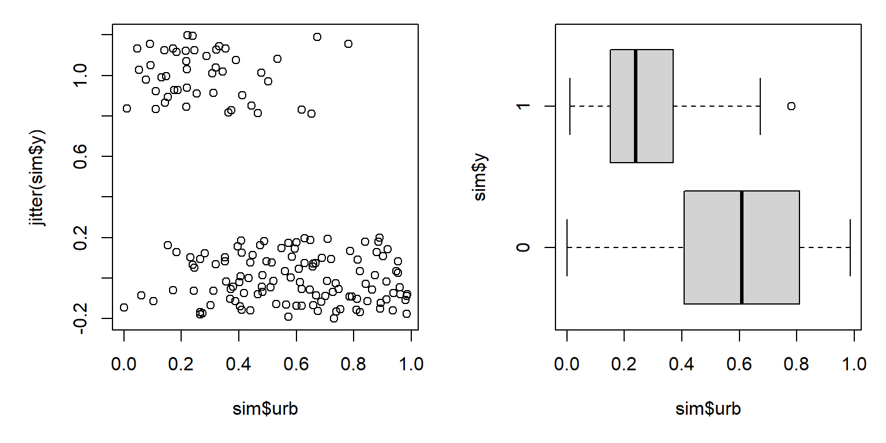
In our simulated example, the Taylor series approximation and Monte Carlo simulations produced nearly identical predictions and CI.
11.3.2 Example with real data
Leonard and Wood (2013) studied the bioaccumulation of nickel (Ni) by four species of invertebrates in different environmental conditions. Invertebrates were held for 14 days in aquaria at varying aqueous Ni concentrations in either hard water (140 mg/L CaCO3) or soft water (40 mg/L CaCO3), after which whole-body Ni residues were measured.
The authors used Michaelis-Menten models to measure the uptake of Ni from the water as a function of Ni concentration. We will focus on part of their dataset, accumulation of Ni by midge Chironomus riparius (above84). Data were extracted from the paper based on parameter estimates in their Table 4 and data in Figure 6. The variables in this dataset are:
| Variable | Units | Meaning |
|---|---|---|
| ni | \(\mu\) mol/L | Concentration of Ni in water |
| res | \(\mu\) mol/kg | Concentration of Ni in body tissues |
| water | N/A | Water treatment: hard or soft (CaCO3 conc.) |
Download the dataset leonard_2013_data.csv and put it in your R home directory.
Part of the original experiment was to see whether water hardness affected uptake of Ni. This is recorded in the factor water in the dataset. Plot the data and color the points by water treatment to see if there are any patterns.
plot(dat$ni, dat$res,
col=ifelse(dat$water=="soft", "black", "red"))
legend("topleft",
legend=c("Soft", "Hard"),
col=c("black", "red"),
pch=1)
The figure suggests that Ni accumulates more slowly in hard water than in soft water, and that less Ni is taken up in hard water. The data seem to follow a curve that approaches an asymptote, around 60000 \(\mu\) mol/kg for soft water and 20000 \(\mu\) mol/kg for hard water. The biological interpretation is that organisms can accumulate Ni from their environment, but eventually the rate of uptake will slow as the organism’s cells and tissues become saturated (or, because they reach an equilibrium with their environment). High levels of Ni accumulation can directly cause mortality, further limiting uptake. We might suspect that a Michaelis-Menten model is appropriate because it (1) has an asymptote term to capture the maximum accumulation; and (2) describes processes where a rate or first derivative slows as the system saturates. Because the dynamics appear so different for the hard water and soft water treatments, we will fit a separate model for each group.
# fit models using nls() and SSmicmen()
flag1 <- which(dat$water == "soft")
flag2 <- which(dat$water == "hard")
mod1 <- nls(res~SSmicmen(ni, a, b),
data=dat[flag1,])
mod2 <- nls(res~SSmicmen(ni, a, b),
data=dat[flag2,])How good are the models? We can calculate the pseudo-R2 values using the function pseudoR2() defined above. Both models look pretty good:
## [1] 0.9754908## [1] 0.9125796Finally, let’s produce the usual predicted values and 95% CI for each group.
library(propagate)
# values for prediction
L <- 20
px <- dat$ni[which(dat$ni > 0)]
px <- seq(min(px), max(px), length=L)
# calculate predictions and CI
pred1 <- predictNLS(mod1,
newdata=data.frame(ni=px),
interval="confidence")
pred2 <- predictNLS(mod2,
newdata=data.frame(ni=px),
interval="confidence")
# just need this part
pred1 <- pred1$summary
pred2 <- pred2$summaryWhich predictions should we use? It usually doesn’t matter whether you use the 1st order Taylor series, 2nd order Taylor series, or Monte Carlo values, but sometimes it does. We can examine histograms of the differences between the predictions to get a sense of which methods agree with each other.
par(mfrow=c(1,3))
hist(pred1$Prop.Mean.1 - pred1$Prop.Mean.2,main="1st - 2nd Taylor")
hist(pred1$Prop.Mean.1 - pred1$Sim.Mean,main="1st Taylor - Monte Carlo")
hist(pred1$Prop.Mean.2 - pred1$Sim.Mean,main="2nd Taylor - Monte Carlo")
Take a look at the x-axis scales: the differences between the 1st order Taylor series and Monte Carlo predictions are quite small relative to some of the differences between either of those and the 2nd order Taylor series estimates. This suggests that we should use one of the two methods that closely agree with each other. Another way to compare the predictions is to plot them against each other, with a line that shows where predictions are equal.
par(mfrow=c(1,3))
plot(pred1$Prop.Mean.1, pred1$Prop.Mean.2)
abline(a=0, b=1, col="red")
plot(pred1$Prop.Mean.1, pred1$Sim.Mean)
abline(a=0, b=1, col="red")
plot(pred1$Prop.Mean.2, pred1$Sim.Mean)
abline(a=0, b=1, col="red")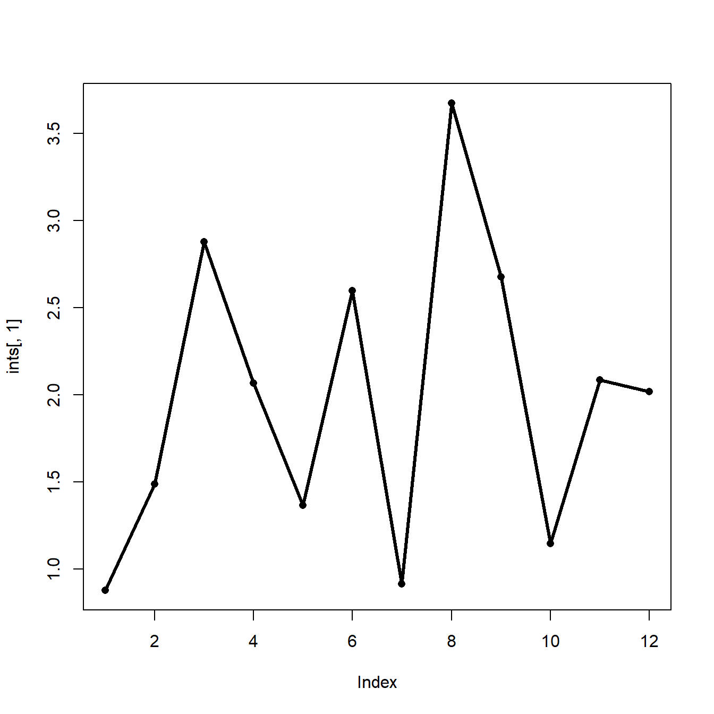
The second set of figures shows a serious problem with the 2nd order approximation: it predicts negative concentrations! Because of this, let’s ignore the 2nd order approximation and stick with the Monte Carlo predictions.
# extract predictions and CI
mn1 <- pred1$Sim.Mean
lo1 <- pred1$'Sim.2.5%'
up1 <- pred1$'Sim.97.5%'
mn2 <- pred2$Sim.Mean
lo2 <- pred2$'Sim.2.5%'
up2 <- pred2$'Sim.97.5%'
# fancy plot options
par(mfrow=c(1,1), mar=c(5.1, 7.1, 1.1, 1.1),
las=1, lend=1, bty="n",
cex.axis=1.3, cex.lab=1.3)
# make the plot
plot(dat$ni, dat$res,
col=ifelse(dat$water=="soft", "black", "red"),
pch=16, cex=1.2,
xlab=expression(Ni~concentration~(mu*g/L)),
ylab="")
# custom y axis (need to move outwards)
title(ylab=expression(Ni~body~residue~(mu*g/kg)), line=5)
points(px, lo1, type="l", lwd=3, lty=2)
points(px, up1, type="l", lwd=3, lty=2)
points(px, mn1, type="l", lwd=3)
points(px, lo2, type="l", col="red", lwd=3, lty=2)
points(px, up2, type="l", col="red", lwd=3, lty=2)
points(px, mn2, type="l", col="red", lwd=3)
legend("topleft",
legend=c("Soft water", "Hard water"),
col=c("black", "red"),
pch=16, bty="n", cex=1.2)
11.3.3 Alternative strategies for the analysis
In the example above, we fit two separate models to understand the effect of a continuous predictor in two groups: hard water and soft water. It is also possible to estimate the effects in a single model in nls(). This produces a NLS model analogous to ANCOVA: the response variable can vary between groups, and/or the response to the continuous predictor can vary between groups. The models are little more complicated than the analogous LM. We can define models where either the asymptote (a), the Michaelis constant (b), or both a and b vary by group. The deterministic parts of these models can be written compactly as:
| Model | Deterministic part |
|---|---|
| Asymptote by group | \(\eta=\frac{a_{water}X}{b+X}\) |
| Michaelis constant by group | \(\eta=\frac{aX}{b_{water}+X}\) |
| Asymptote and Michaelis constant by group | \(\eta=\frac{a_{water}X}{b_{water}+X}\) |
These models can’t be coded directly in nls(). Instead, we need to rewrite the model first to include some vectors of 1s and 0s to isolate the observations in each treatment. The equations below show what that looks like.
| Model | Deterministic part |
|---|---|
| Asymptote by group | \(\eta=\frac{{\psi_{hard}a}_{hard}X}{b+X}+\frac{{\psi_{soft}a}_{soft}X}{b+X}\) |
| Michaelis constant by group | \(\eta=\frac{\psi_{hard}aX}{b_{hard}+X}+\frac{\psi_{soft}aX}{b_{soft}+X}\) |
| Asymptote and Michaelis constant by group | \(\eta=\frac{{\psi_{hard}a}_{hard}X}{b_{hard}+X}+\frac{{\psi_{soft}a}_{soft}X}{b_{soft}+X}\) |
In these equations the coefficient \(\psi_{hard}\) takes value 1 for observations from the hard water group and value 0 for observations in the soft water group (\(\psi\) is the Greek letter “psi” and is often used for probabilities or binary variables). The coefficient \(\psi_{soft}\) does exactly the opposite: takes value 1 for observations from the soft water group and value 0 for observations in the hard water group. This form means that the parameters specific to hard water cannot affect observations from soft water and vice versa. These sorts of parameters are called dummy variables85.
We can code each of these models in nls(). For starting values we can use the parameter estimates from the models fitted to each group separately (mod1 and mod2).
flag3 <- which(dat$ni > 0)
dat2 <- dat[flag3,]
dat2$psi.hard <- as.numeric(dat2$water == "hard")
dat2$psi.soft <- as.numeric(dat2$water == "soft")
# asymptote by group:
mod3 <- nls(res~
(psi.hard)*((a.hard*ni)/(b+ni))+
(psi.soft)*((a.soft*ni)/(b+ni)),
data=dat2,
start=list(a.hard=25038, a.soft=71997, b=2000))
# Michaelis constant by group:
mod4 <- nls(res~
(psi.hard)*((a*ni)/(b.hard+ni))+
(psi.soft)*((a*ni)/(b.soft+ni)),
data=dat2,
start=list(a=48500, b.hard=1928, b.soft=4310))
# both parameters by group
mod5 <- nls(res~
(psi.hard)*((a.hard*ni)/(b.hard+ni))+
(psi.soft)*((a.soft*ni)/(b.soft+ni)),
data=dat2,
start=list(a.hard=20000, a.soft=50000,
b.hard=1000, b.soft=4300))For complex models like model 5, you may get the dreaded singular gradient error in nls(), which means that R can’t find a solution from the starting values you provided. You might be able to get the model to work by changing the starting values, but probably not. We’ll come back to model 5 later and explore an alternative way to fit it.
We can use AIC to compare the fits of the models that did work:
## df AIC
## mod3 4 1256.312
## mod4 4 1293.576
## mod5 5 1250.118We can also use package propagate to calculate fitted values and 95% CI.
px <- seq(min(dat2$ni), max(dat2$ni), length=20)
dx <- expand.grid(ni=px, psi.hard=c(1,0))
dx$psi.soft <- ifelse(dx$psi.hard==1, 0, 1)
pred <- predictNLS(mod5,
newdata=data.frame(dx),
interval="confidence")
pred <- pred$summaryExtract the values you need for a plot:
flag.soft <- which(dx$psi.soft == 1)
flag.hard <- which(dx$psi.hard == 1)
mn.soft <- pred$Sim.Mean[flag.soft]
lo.soft <- pred$'Sim.2.5%'[flag.soft]
up.soft <- pred$'Sim.97.5%'[flag.soft]
mn.hard <- pred$Sim.Mean[flag.hard]
lo.hard <- pred$'Sim.2.5%'[flag.hard]
up.hard <- pred$'Sim.97.5%'[flag.hard]Now make a fancy plot:
# fancy plot options
par(mfrow=c(1,1), mar=c(5.1, 7.1, 1.1, 1.1),
las=1, lend=1, bty="n",
cex.axis=1.3, cex.lab=1.3)
# make the plot
plot(dat2$ni, dat2$res,
col=ifelse(dat2$water=="soft", "black", "red"),
pch=16, cex=1.2,
xlab=expression(Ni~concentration~(mu*g/L)),
ylab="")
# custom y axis (need to move outwards)
title(ylab=expression(Ni~body~residue~(mu*g/kg)), line=5)
points(px, lo.soft, type="l", lwd=3, lty=2)
points(px, up.soft, type="l", lwd=3, lty=2)
points(px, mn.soft, type="l", lwd=3)
points(px, lo.hard, type="l", col="red", lwd=3, lty=2)
points(px, up.hard, type="l", col="red", lwd=3, lty=2)
points(px, mn.hard, type="l", col="red", lwd=3)
legend("topleft",
legend=c("Soft water", "Hard water"),
col=c("black", "red"),
pch=16, bty="n", cex=1.2)
Complicated nonlinear models like model 5 can be difficult to fit using the optimization algorithms in R. There is an alternative set of techniques called Markov chain Monte Carlo (MCMC) that can be used for fitting complex models. MCMC uses long chains of random samples to try lots of different possible values for each parameter, and adjusts parameters at each iteration (step in the chain) depending on how well or poorly the model fits with the current parameters. Using MCMC turns your analysis into a Bayesian analysis. A more in-depth explanation of Bayesian inference was provided in Module 1.
For MCMC we will need the program JAGS as well as the R packages rjags and R2jags.
mod.name <- "mod05.txt"
sink(mod.name)
cat("
model{
# priors
## element 1 = soft
## element 2 = hard
### asymptote
for(i in 1:2){a.water[i]~dunif(1e3, 1e5)}
### Michaelis constant
for(i in 1:2){b.water[i]~dunif(1e2, 1e4)}
## residual SD -> precision (tau)
sigma ~ dunif(0, 1e4)
tau.y <- 1 / (sigma * sigma)
# likelihood
for(i in 1:N){
y[i] ~ dnorm(eta[i], tau.y)
eta[i] <- (a.water[water[i]] *
x[i])/(b.water[water[i]]+x[i])
}# i for N
}#model
", fill=TRUE)
sink()library(R2jags)
library(rjags)
# define initial values for MCMC chains
init.fun <- function(nc){
res <- vector("list", length=nc)
for(i in 1:nc){
res[[i]] <- list(
a.water=runif(2, 1e3, 1e5),
b.water=runif(2, 1e2, 1e4),
sigma=runif(1, 0.1, 1e4))
}#i
return(res)
}
nchains <- 3
inits <- init.fun(nchains)
# parameters to monitor
params <- c("a.water", "b.water", "sigma")
# MCMC parameters
n.iter <- 2e4
n.burnin <- 4e3
n.thin <- 100
# package data for JAGS
in.data <- list(y=dat2$res,
x=dat2$ni,
N=nrow(dat2),
water=dat2$psi.hard+1)
model05 <- jags(data=in.data, inits=inits,
parameters.to.save=params,
model.file=mod.name,
n.chains=nchains, n.iter=n.iter,
n.burnin=n.burnin, n.thin=n.thin)#jags## Compiling model graph
## Resolving undeclared variables
## Allocating nodes
## Graph information:
## Observed stochastic nodes: 66
## Unobserved stochastic nodes: 5
## Total graph size: 278
##
## Initializing modelThe most important part of the output is here:
## mean sd 2.5% 25% 50% 75% 97.5% Rhat n.eff
## a.water[1] 72849.1 3257.2 66711.7 70672.3 72833.6 74848.2 79183.4 1 470
## a.water[2] 25761.0 1894.1 22570.3 24323.8 25674.6 27011.9 29616.5 1 480
## b.water[1] 4480.2 543.7 3489.4 4098.9 4469.4 4823.9 5608.4 1 480
## b.water[2] 2208.8 602.6 1242.1 1783.3 2147.1 2528.5 3644.3 1 480
## deviance 1245.9 3.5 1241.0 1243.4 1245.1 1247.7 1254.0 1 480
## sigma 3066.0 283.0 2546.9 2860.5 3046.3 3244.2 3676.0 1 480The parameter estimates (mean) are close to their true values. The next few columns show SD and various quantiles of the posterior distribution of each parameter. The Gelman-Rubin statistic, \(\hat{R}\) (“R-hat”) are <1.01 for each parameter, suggesting that the MCMC chains converged. This means that the 3 chains reached about the same distribution for a parameter.
Using JAGS can be overkill sometimes, but might be the only way to get a model to fit (and there is no guarantee that JAGS can fit a model!). This method has the advantage of fitting the model directly, without adding in dummy variables for each treatment.
We can use the MCMC samples saved in the model object to generate model predictions. The intervals produced for this plot are not true confidence intervals (CI), but their Bayesian analogue, credible intervals (CRI).
# MCMC samples
z <- model05$BUGSoutput$sims.list
# make data frame for prediction:
px <- seq(min(dat2$ni), max(dat2$ni), length=20)
# water: 1 = soft, 2 = hard
dx <- expand.grid(ni=px, water=1:2)
dx$lo <- NA
dx$up <- NA
dx$mn <- NA
mx.mn <- matrix(NA, nrow=nrow(dx), ncol=nrow(z[[1]]))
mx.lo <- mx.mn
mx.up <- mx.mn
for(i in 1:ncol(mx.mn)){
eta <- (z$a.water[i,dx$water]*dx$ni)/(
z$b.water[i,dx$water]+dx$ni)
mx.mn[,i] <- eta
mx.lo[,i] <- pmax(0, eta-mean(z$sigma[,1]))
mx.up[,i] <- eta+mean(z$sigma[,1])
}
dx$lo <- apply(mx.lo, 1, median)
dx$up <- apply(mx.up, 1, median)
dx$mn <- apply(mx.mn, 1, median)
# make the plot
flag.soft <- which(dx$water == 1)
flag.hard <- which(dx$water == 2)
# fancy plot options
par(mfrow=c(1,1), mar=c(5.1, 7.1, 1.1, 1.1),
las=1, lend=1, bty="n",
cex.axis=1.3, cex.lab=1.3)
# make the plot
plot(dat2$ni, dat2$res,
col=ifelse(dat2$water=="soft", "black", "red"),
pch=16, cex=1.2,
xlab=expression(Ni~concentration~(mu*g/L)),
ylab="")
# custom y axis (need to move outwards)
title(ylab=expression(Ni~body~residue~(mu*g/kg)), line=5)
points(px, dx$lo[flag.soft], type="l", lwd=3, lty=2)
points(px, dx$up[flag.soft], type="l", lwd=3, lty=2)
points(px, dx$mn[flag.soft], type="l", lwd=3)
points(px, dx$lo[flag.hard], type="l", col="red", lwd=3, lty=2)
points(px, dx$up[flag.hard], type="l", col="red", lwd=3, lty=2)
points(px, dx$mn[flag.hard], type="l", col="red", lwd=3)
legend("topleft",
legend=c("Soft water", "Hard water"),
col=c("black", "red"),
pch=16, bty="n", cex=1.2)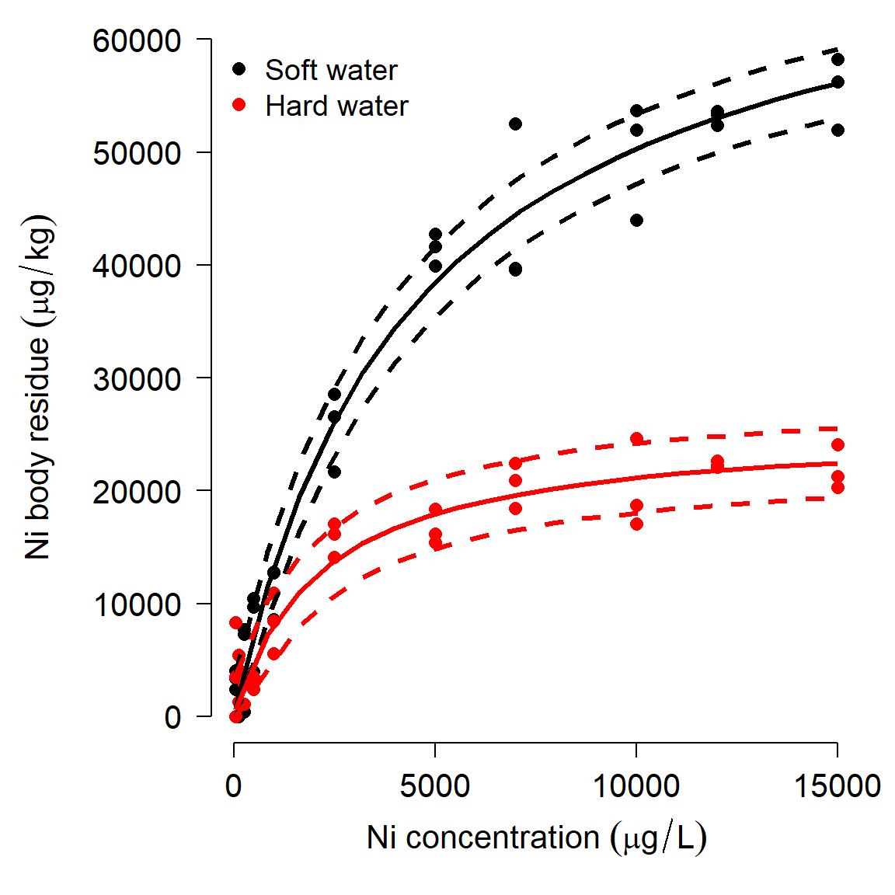
In this case, we got a model fit similar to what nls() produced, and similar predicted values. For this case, JAGS and MCMC are probably more trouble than they are worth. If you are having trouble getting nls() to fit a model, MCMC may be a more effective alternative…if the model can be fit and if the pattern is really there.
11.4 Biological growth curves
This section explores several common biological growth curves. Living organisms often grow in nonlinear ways. For example, humans grow much faster during their first two years of life than during the rest of their lives. Biologists have developed many mathematical models to describe these patterns of growth. What is common to many of these models is that the rate of growth at any given time is proportional to the organism’s size at that time. Consequently, biological growth models often include at least one exponential term. For mathematical convenience, that exponential term is usually of the form \(e^x\), where e is Euler’s constant (\(\approx\) 2.718282), also known as the base of the natural logarithm.
11.4.1 Gompertz and von Bertalanffy curves
We will practice fitting two common growth curves, the Gompertz curve and the von Bertalanffy curve. Both are very commonly used in biology to model the growth of individual organisms. The Gompertz curve is also used to model population growth. Both models are special cases of the generalized logistic function.
The Gompertz curve is written in several ways. You can use whichever form you want, but you need to be explicit about what you did. Most people use the second of the two forms presented below.
Gompertz model form 1 (Bolker (2008); page 96)
\[f\left(x\right)=e^{-ae^{-bx}}\]
- a: Displacement along x-axis (equivalent to b in form 2)
- b: Growth rate (similar to c in form 2)
The figure below shows the effects of varying the parameters in form 1 of the Gompertz model. Notice that the asymptote is fixed at 1. Because of this, form 2 is more commonly used.

Gompertz model form 2 (more common)
\[f\left(x\right)={ae}^{-e^{b-ct}}\]
- a: Asymptote (maximum value)
- b: Displacement along x-axis (shifts left or right)
- c: Growth rate (similar to b in form 1)
The figure below shows the effects of varying the parameters in the second form of the Gompertz model:
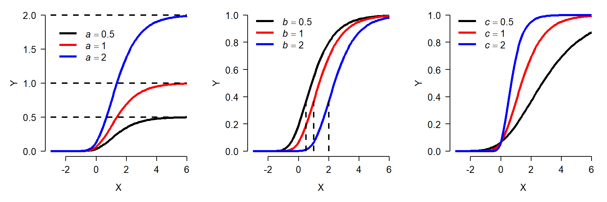
von Betalanffy model
Like the Gompertz curve, the von Bertalanffy growth curve describes size increasing and approaching an asymptote. The von Bertalanffy model is commonly written as:
\[f\left(x\right)=L_\infty\left(1-e^{-k\left(x-t_0\right)}\right)\]
- \(L_{\infty}\): Asymptotic length as x approaches \(\infty\)
- k: Growth rate
- \(t_0\): Theoretical time at which \(f(x)=0\). I.e., displacement along x-axis. Should be negative.
The von Bertalanffy model is commonly used in fisheries to describe fish growth, but in principle it could be used for any situation where its parameters make sense. The same function is also sometimes called the monomolecular curve. Like the Gompertz curve, the von Bertalanffy model has several forms. The form given above is the most common. The figure below shows the effects of varying the parameters in the von Bertalanffy model:

Both the Gompertz and von Bertalanffy curves can also be used to model decreasing phenomena, but this is not commonly done.
11.4.2 Example with real data
Woodward et al. (2015) studied the life history dynamics of the Cretaceous hadrosaurid dinosaur Maiasaura peeblesorum (below86). They used microscopic growth rings in the tibias of museum specimens to estimate age at death and the sizes of several bones to estimate total body length and mass. We will use their age and mass data to fit growth curves for this species.
The data are stored in the file woodward2015data.csv. Download the dataset and put it in your R home directory.

Use nls() to fit the two growth curves. There is a self-starting Gompertz model available, so we’ll use that. There is no self-start von Bertalanffy model, so we’ll have to guess at the parameters. Based on the plot above, we might guess that the asymptote \(L_\infty\) is about 4000, and that \(t_0\) is about -1. Using those rough estimates, we can rearrange the von Bertalanffy model and solve for the missing term k as:
\[\hat{k}=\frac{-\log{\left(1-\frac{f\left(x\right)}{L_\infty}\right)}}{x-t_0}\]
Or in R:
## [1] 0.09268849The mean of the estimated k (\(\hat{k}\), or “k-hat”) is about 0.09. So, we’ll use that for our starting guess. Now we can fit both the Gompertz and von Bertalanffy models:
mod1 <- nls(mass~SSgompertz(age, A, B, C), data=dat)
mod2 <- nls(mass~Linf*(1-exp(-k*(age-t0))),
data=dat,
start=list(Linf=4e3, k=0.09, t0=-1))
summary(mod1)##
## Formula: mass ~ SSgompertz(age, A, B, C)
##
## Parameters:
## Estimate Std. Error t value Pr(>|t|)
## A 3.145e+03 1.718e+02 18.31 < 2e-16 ***
## B 3.076e+00 2.858e-01 10.76 3.64e-12 ***
## C 6.514e-01 3.081e-02 21.14 < 2e-16 ***
## ---
## Signif. codes: 0 '***' 0.001 '**' 0.01 '*' 0.05 '.' 0.1 ' ' 1
##
## Residual standard error: 208.4 on 32 degrees of freedom
##
## Number of iterations to convergence: 5
## Achieved convergence tolerance: 1.862e-06##
## Formula: mass ~ Linf * (1 - exp(-k * (age - t0)))
##
## Parameters:
## Estimate Std. Error t value Pr(>|t|)
## Linf 3.966e+03 3.902e+02 10.165 1.52e-11 ***
## k 1.572e-01 2.656e-02 5.917 1.38e-06 ***
## t0 2.315e-01 1.288e-01 1.797 0.0817 .
## ---
## Signif. codes: 0 '***' 0.001 '**' 0.01 '*' 0.05 '.' 0.1 ' ' 1
##
## Residual standard error: 212.7 on 32 degrees of freedom
##
## Number of iterations to convergence: 7
## Achieved convergence tolerance: 1.724e-06Both models were able to fit all of their parameters, although the \(t_0\) term in the von Bertalanffy model was nonsignificant (i.e., not different from 0). This might indicate that we should go with the Gompertz model. The pseudo-R2 values are similar and don’t strongly suggest choosing one model over another:
pseudoR2 <- function(mod, Y){
ss.tot <- sum((fitted(mod)-mean(Y))^2)
ss.res <- sum(residuals(mod)^2)
1-(ss.res/ss.tot)
}
pseudoR2(mod1, dat$mass)## [1] 0.946444## [1] 0.9459103The AICs of the models suggest that the Gompertz model is slightly better, but not significantly so. The difference in AIC is <2, suggesting that the models are equivalent in their support. This means that we would be justified choosing either one, or not choosing and presenting both.
## df AIC
## mod1 4 477.9660
## mod2 4 479.3922## [1] 1.426267Another way to determine which model fits better is to compare their ability to predict out-of-sample data. That is, data that were not used to fit the model. The most common strategy for this is called “cross-validation”. There are many kinds of cross-validation. What they all have in common is that the model is fit to some of the data, and then its predictive accuracy is checked using the held-out data. One popular strategy is k-fold cross-validation, the data are divided into k subsets, or “folds”. Then, the model is fit k times: each time to all of the data except those in one fold. The predictive accuracy of these models is then calculated for the data in the fold that was left out. The better the model is at predicting out-of-sample data, the smaller the average error should be.
Let’s try another method called “leave-one-out” cross-validation. In this strategy, the model is fit to all observations except 1 at a time. Then, the root mean squared error (RMSE) is calculated for both models.
N <- nrow(dat)
err1 <- numeric(N)
err2 <- err1
for(i in 1:N){
mod1i <- nls(mass~SSgompertz(age, A, B, C), data=dat[-i,])
mod2i <- nls(mass~Linf*(1-exp(-k*(age-t0))),
data=dat[-i,],
start=list(Linf=4e3, k=0.09, t0=-1))
px <- data.frame(age=dat$age[i])
err1[i] <- predict(mod1i,
newdata=data.frame(px)) - dat$age[i]
err2[i] <- predict(mod2i,
newdata=data.frame(px)) - dat$age[i]
}
sqrt(mean(err1^2))## [1] 1599.034## [1] 1634.066Again, the Gompertz curve looks slightly better than the von Bertalanffy, but not by much. For our example let’s go ahead and plot both models.
library(propagate)
px <- seq(min(dat$age), max(dat$age), length=25)
pred <- predictNLS(mod1,
newdata=data.frame(age=px),
interval="confidence")
pred <- pred$summary
mn1 <- pred$Sim.Mean
lo1 <- pred$'Sim.2.5%'
up1 <- pred$'Sim.97.5%'
pred2 <- predictNLS(mod2,
newdata=data.frame(age=px),
interval="confidence")
pred2 <- pred2$summary
mn2 <- pred2$Sim.Mean
lo2 <- pred2$'Sim.2.5%'
up2 <- pred2$'Sim.97.5%'Now make the plot:
par(mfrow=c(1,1), mar=c(5.1, 7.1, 1.1, 1.1),
las=1, lend=1, bty="n",
cex.axis=1.3, cex.lab=1.3)
# make the plot
plot(dat$age, dat$mass,
pch=16, cex=1.2,
xlab="Age (years)",
ylab="", ylim=c(0,3400))
title(ylab="Mass (kg)", line=5)
polygon(x=c(px, rev(px)), y=c(lo1, rev(up1)),
border=NA, col="#FF000030")
polygon(x=c(px, rev(px)), y=c(lo2, rev(up2)),
border=NA, col="#0000FF30")
points(px, mn1, type="l", lwd=3, col="red")
points(px, mn2, type="l", lwd=3, col="blue")
legend("bottomright",
legend=c("Gompertz", "von Bertalanffy"),
lwd=4, col=c("red", "blue"),
bty="n", cex=1.3)
The plot reveals a problem with the von Bertalanffy: it predicts negative masses! This is probably because the model had a non-significant \(t_0\) with a point estimate that was non-negative. The \(t_0\) term is the age when the response variable is 0, and must be positive to ensure that only positive sizes are predicted.
It might be worth asking how fast the animals grew, and how that growth rate changed over the course of their lives. Technically, the growth rate would be the first derivative of the fitted function. However, getting a first derivative might be difficult or impossible for many NLS models. Instead, we can calculate the values empirically. Over a period of 12 years (the domain of our fitted function), daily time steps offer a reasonable approximation of the instantaneous rate of change (daily time steps are more biologically interpretable than a literally instantaneous rate, as well).
# daily x values as fractional years
xday <- 0:(12*365.25) # Julian year length
xday <- xday / 365.25
# predicted daily mass
yday <- predict(mod1, newdata=data.frame(age=xday))
ydiff <- diff(yday)
xdiff <- 1:length(ydiff)/365.25
plot(xdiff, ydiff, type="l", lwd=3,
xlab="Age (years)",
ylab="Daily mass gain (kg)")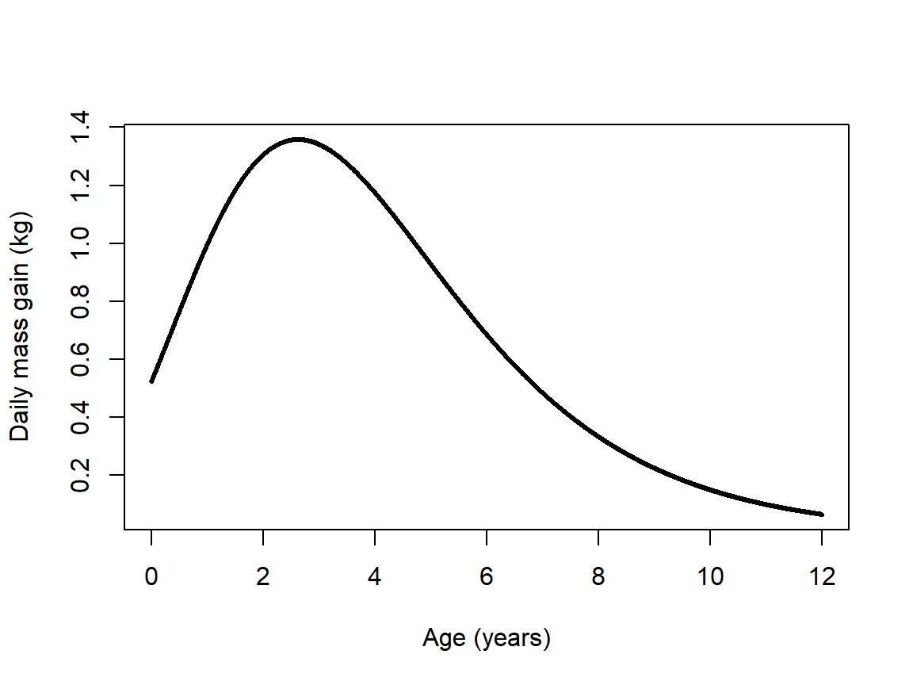
The figure shows that daily growth peaked during the 3rd year of life (age 2 to age 3), when animals gained an average of 1.5 kg per day. Interestingly, this the age at which the authors of the original study hypothesized the animals reached sexual maturity (Woodward et al. 2015).
11.5 Dose response curves
A dose response curve describes the change in a biological system following a quantitative perturbation. Most dose response models are nonlinear because of the dynamics of the systems they describe. Mechanistically, there is often a rate that scales with the current concentration of a compound, or some other aspect of the system. In other words, the dynamics of the system are described by a kind of differential equation. The state of the system is thus described by solutions to those equations.
There are many dose-response models out there. We will fit two common ones using the R package drc (Ritz et al. 2015). Many dose response models could also be fit by nls(), but we will use the drc package because of its convenience and so that we can learn an alternative approach.
We will use an example from the Supplemental Information provided by the authors of drc (Ritz et al. 2015). Inderjit et al. (2002) studied the effect of an herbicide mixture on perennial ryegrass (Lolium perenne)87. Rye grass seeds were placed in Petri dishes and treated with a solution of ferulic acid in concentrations ranging from 0 to 30 mM. The seeds were allowed to germinate and develop for 8 days. After 8 days the root length of each individual seed was measured.
Load the drc package and access the dataset ryegrass. Then, plot root length against ferulic acid concentration.
## Warning: package 'drc' was built under R version 4.3.3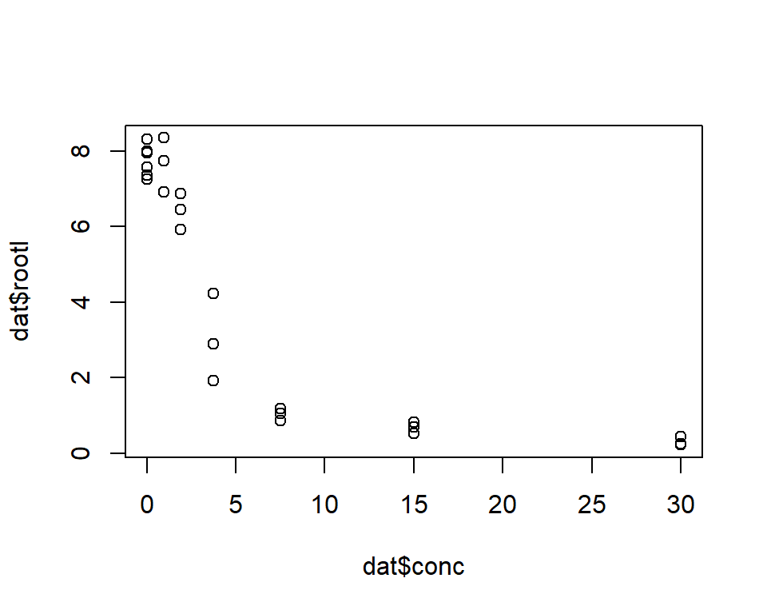
The plot suggests that increasing ferulic acid concentration decreases mean root length. The relationship also appears nonlinear: root length decreases very quickly at low ferulic acid concentration, and then levels out as concentration increases beyond about 5 mM.
We will try two nonlinear models found in the drc package. The first is the log-logistic model. The log-logistic model comes in several flavors, defined by the number of parameters used to specify the curve. Two common varieties are shown below. By convention, one of the parameters is labeled “e”, but it is not the same as Euler’s constant e (\(\approx\) 2.71828). The parameter labeled e shows up only in the exponent as \(log(e)\), but this does not mean \(log(exp(1))\) (which would be 1, by definition). The bases of the exponents in the models below are Euler’s e. For clarity, the parameter e is sometimes labeled with another letter, or the exponential function \(e^x\) is written as \(exp(x)\).
Three-parameter log-logistic:
\[f\left(x,\left(b,d,e\right)\right)=\frac{d}{1+e^{b\left(log{\left(x\right)}-log{\left(e\right)}\right)}}=\frac{d}{1+exp\left(log{\left(x\right)}-log{\left(e\right)}\right)}\]
Four-parameter log-logistic:
\[f\left(x,\left(b,c,d,e\right)\right)=\frac{d-c}{1+e^{b\left(log{\left(x\right)}-log{\left(e\right)}\right)}}=\frac{d-c}{1+exp\left(b\left(log{\left(x\right)}-log{\left(e\right)}\right)\right)}\]
Just for fun we can also try a Weibull type I function: \[\begin{matrix}f\left(x,\ \left(b,c,d,e\right)\right)=&c+\left(d-c\right)e^{-e^{b\left(log{\left(x\right)}-log{\left(e\right)}\right)}}\\f\left(x,\ \left(b,c,d,e\right)\right)=&c+\left(d-c\right)exp\left(-exp\left(b\left(log{\left(x\right)}-log{\left(e\right)}\right)\right)\right)\\\end{matrix}\]
Fitting the models in drc is straightforward. First define the response and predictor variables in a formula (as in lm() and other functions), specify the dataset to be used, and finally the curve (fct) to be fitted. The full list of functions that drm() can fit can be found with the command getMeanFunctions().
mod1 <- drm(rootl~conc, data=ryegrass, fct=LL.3())
mod2 <- drm(rootl~conc, data=ryegrass, fct=LL.4())
mod3 <- drm(rootl~conc, data=ryegrass, fct=weibull1())
summary(mod1)##
## Model fitted: Log-logistic (ED50 as parameter) with lower limit at 0 (3 parms)
##
## Parameter estimates:
##
## Estimate Std. Error t-value p-value
## b:(Intercept) 2.47033 0.34168 7.2299 4.011e-07 ***
## d:(Intercept) 7.85543 0.20438 38.4352 < 2.2e-16 ***
## e:(Intercept) 3.26336 0.19641 16.6154 1.474e-13 ***
## ---
## Signif. codes: 0 '***' 0.001 '**' 0.01 '*' 0.05 '.' 0.1 ' ' 1
##
## Residual standard error:
##
## 0.5615802 (21 degrees of freedom)##
## Model fitted: Log-logistic (ED50 as parameter) (4 parms)
##
## Parameter estimates:
##
## Estimate Std. Error t-value p-value
## b:(Intercept) 2.98222 0.46506 6.4125 2.960e-06 ***
## c:(Intercept) 0.48141 0.21219 2.2688 0.03451 *
## d:(Intercept) 7.79296 0.18857 41.3272 < 2.2e-16 ***
## e:(Intercept) 3.05795 0.18573 16.4644 4.268e-13 ***
## ---
## Signif. codes: 0 '***' 0.001 '**' 0.01 '*' 0.05 '.' 0.1 ' ' 1
##
## Residual standard error:
##
## 0.5196256 (20 degrees of freedom)##
## Model fitted: Weibull (type 1) (4 parms)
##
## Parameter estimates:
##
## Estimate Std. Error t-value p-value
## b:(Intercept) 2.39341 0.47832 5.0038 6.813e-05 ***
## c:(Intercept) 0.66045 0.18857 3.5023 0.002243 **
## d:(Intercept) 7.80586 0.20852 37.4348 < 2.2e-16 ***
## e:(Intercept) 3.60013 0.20311 17.7250 1.068e-13 ***
## ---
## Signif. codes: 0 '***' 0.001 '**' 0.01 '*' 0.05 '.' 0.1 ' ' 1
##
## Residual standard error:
##
## 0.5488238 (20 degrees of freedom)All three models fit, had statistically-significant parameters, and had similar residual standard errors (RSE; a measure of model fit similar to RMSE). Model 2 (4 parameter log-logistic) had the smallest RSE and the smallest AIC:
## df AIC
## mod1 4 45.20827
## mod2 5 42.31029
## mod3 5 44.93439This is moderately convincing evidence that model 2 is the best-fitting of the three models that we fit. Let’s calculate predictions and 95% CI for a range of concentrations and present them in a graph. Unlike nls() objects, models fitted using drm() have a predict method that can generate confidence intervals. The code below may return warnings, but these messages can probably be ignored.
L <- 50
px <- seq(min(dat$conc), max(dat$conc), length=L)
pred <- predict(mod2,
newdata=data.frame(conc=px),
interval="confidence")
mn <- pred[,1]
lo <- pred[,2]
up <- pred[,3]
# fancy plot options
par(mfrow=c(1,1), mar=c(5.1, 5.1, 1.1, 1.1),
las=1, lend=1, bty="n",
cex.axis=1.3, cex.lab=1.3)
# make the plot
plot(dat$conc, dat$rootl,
pch=16, cex=1.2,
xlab="Ferulic acid (mM)",
ylab="Root length (cm)")
polygon(c(px, rev(px)), c(lo, rev(up)),
border=NA, col="lightgrey")
points(px, mn, type="l", lwd=3)
points(dat$conc, dat$rootl, pch=16, cex=1.2)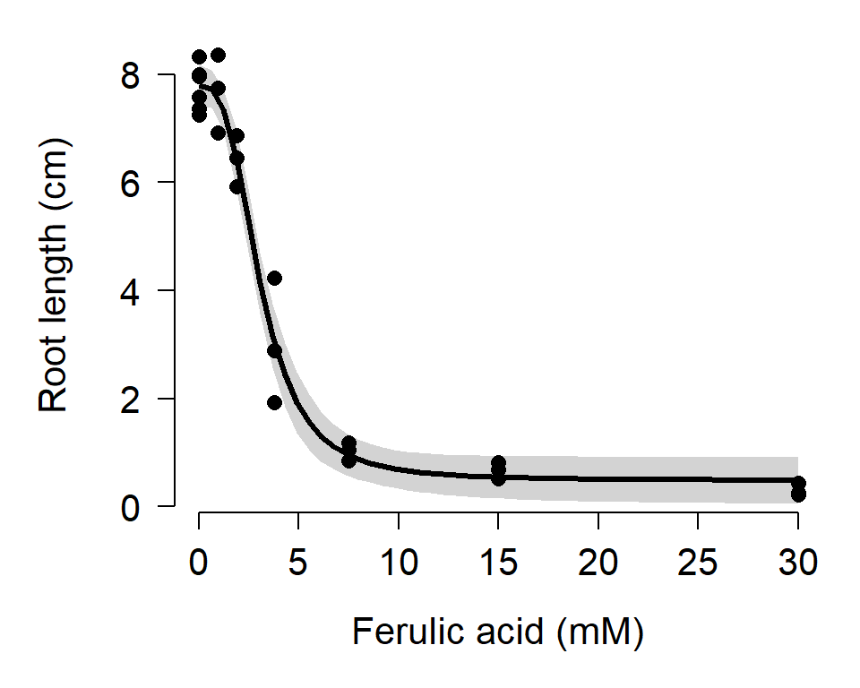
Regardless of whether or not you get warning messages, you should carefully inspect the data, the residuals, and the model predictions to be sure that the estimates are biologically reasonable. The figure above shows no obvious red flags, but your data might not be so well-behaved.
11.6 Alternatives to NLS
If your goal is to model some response variable that varies nonlinearly with predictor variables, there are several good alternatives to NLS. The examples below introduce generalized nonlinear models (GNM), quantile regression, generalized additive models (GAM), and classification and regression trees (CART). This page briefly describes and demonstrates each method. More in-depth tutorials might be developed in the future.
11.6.1 Generalized nonlinear models
Just as generalized linear models (GLM) extend the linear model by allowing for non-normal response distributions, the generalized nonlinear model (GNM) extends nonlinear models with non-normal response distributions. GNMs are available in the R package gnm (Turner and Firth 2020). This package is fairly new and tricky to fit models with. I prefer to fit GNM using MCMC in JAGS.
11.6.2 Quantile regression
Quantile regression is a technique to model specific quantiles of a response variable as a function of predictor variables. In linear regression, GLM, NLS, and GNM, the fitted model predicts the mean value of the response variable. With quantile regression, you can model other quantiles of the distribution. Quantile regression for the 0.5 quantile (50th percentile) is very similar to regression on the mean. Regression for other quantiles can allow you to describe relationships where the mean and predictor variables are not linearly related. A good reference for quantile regression is Cade and Noon (2003). Quantile regression models are available in the R package quantreg (Koenker 2021). Like least-squares models, quantile regression can be used to model both linear and nonlinear relationships.
11.6.2.1 Linear quantile regression example
For this example and the nonlinear quantile regression example we will use the “Mammals” dataset found in package quantreg. This dataset contains the body weights and maximum running speeds of 107 species of mammals.
## Warning: package 'quantreg' was built under R version 4.3.3## Loading required package: SparseM## Warning: package 'SparseM' was built under R version 4.3.3##
## Attaching package: 'SparseM'## The following object is masked from 'package:Matrix':
##
## det
As you might expect, larger animals tend to run faster than smaller animals. The relationship might be linear or nonlinear, so we will try both linear and nonlinear quantile regression models. First we will define a series of quantiles in [0, 1] at which to fit models. In my experience, quantiles \(\le\) 0.05 and \(\ge\) 0.95 tend to have numerical problems, especially for small datasets. By convention, the quantiles in quantreg are identified by the Greek letter \(\tau\) (“tau”). The fastest way to fit quantile regressions is in a for() loop.
taus <- 5:95/100
ntau <- length(taus)
rq.list <- vector("list", ntau)
for(i in 1:ntau){
rq.list[[i]] <- rq(y~x, data=dat, tau=taus[i])
}The list rq.list contains a fitted model for each quantile \(\tau\) in [0.05, 0.95]. We will extract some results from these model objects to present as our model outputs.
# data frame of parameter estimates and CI
res <- data.frame(tau=taus)
res$b0.mn <- sapply(rq.list, function(x){summary(x)$coefficients[1,1]})
res$b0.lo <- sapply(rq.list, function(x){summary(x)$coefficients[1,2]})
res$b0.up <- sapply(rq.list, function(x){summary(x)$coefficients[1,3]})
res$b1.mn <- sapply(rq.list, function(x){summary(x)$coefficients[2,1]})
res$b1.lo <- sapply(rq.list, function(x){summary(x)$coefficients[2,2]})
res$b1.up <- sapply(rq.list, function(x){summary(x)$coefficients[2,3]})Rather than present model predictions for all 90 quantiles, let’s just present a subset. Here we present the predicted 0.1, 0.3, 0.5, 0.7, and 0.9 quantiles of running speed (i.e., 10th, 30th, 50th, 70th, and 90th percentiles).
# predictions for selected quantiles
ptau <- c(1, 3, 5, 7, 9)/10
px <- seq(min(dat$x), max(dat$x), length=50)
pmat <- matrix(NA, nrow=length(px), ncol=length(ptau))
for(i in 1:length(ptau)){
curr.mod <- rq.list[[which(taus == ptau[i])]]
pmat[,i] <- predict(curr.mod, newdata=data.frame(x=px))
}Finally, we can produce a figure that shows (1) the data and predicted quantiles; (2) the estimate and 95% CI of the model intercept for each \(\tau\); and (3) the estimate and 95% CI of the model slope for each \(\tau\). The code for the figure has a lot of components, but each of them should be something familiar by now.
# plot data and parameter estimates vs. tau
par(mfrow=c(1,3), bty="n", mar=c(5.1, 5.1, 1.1, 1.1),
lend=1, las=1, cex.axis=1.3, cex.lab=1.3)
plot(dat$x, dat$y, ylim=c(0, 5.5),
xlab="Body mass (kg)",
ylab="Running speed (km/h)",
xaxt="n", yaxt="n")
for(i in 1:length(ptau)){
points(px, pmat[,i], type="l")
text(px[length(px)], pmat[nrow(pmat),i], ptau[i], adj=0)
}
xax <- 10^seq(-2, 4, by=1)
axis(side=1, at=log(xax), labels=xax)
yax1 <- c(1, 10, 100)
yax2 <- c(2:9, 2:9*10, 110)
axis(side=2, at=log(yax1), labels=yax1)
axis(side=2, at=log(yax2), labels=NA, tcl=-0.3)
plot(taus, res$b0.mn, type="s",
lwd=3, ylim=c(-1, 5),
xlab=expression(Quantile~(tau)),
ylab=expression(Model~intercept~(beta[0])))
points(taus, res$b0.lo, type="l", lwd=2, lty=2)
points(taus, res$b0.up, type="l", lwd=2, lty=2)
segments(0, 0, 1, 0, lty=2, lwd=1)
plot(taus, res$b1.mn, type="s", lwd=3,
ylim=c(-0.5, 0.5),
xlab=expression(Quantile~(tau)),
ylab=expression(Model~slope~(beta[1])))
points(taus, res$b1.lo, type="l", lwd=2, lty=2)
points(taus, res$b1.up, type="l", lwd=2, lty=2)
segments(0, 0, 1, 0, lty=2, lwd=1)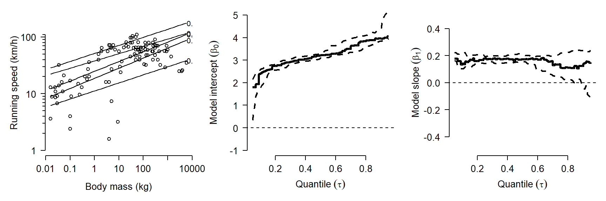
How do we interpret this result? One result is that the model intercept increases steadily with quantile. In other words, the quantile regression line has a greater intercept for greater response quantiles. This is very common. The rightmost plot shows that the quantile regression slope doesn’t vary much between quantiles. This suggests that the data would have worked well with ordinary linear regression. If there is a trend in slope (\(\beta_1\)) vs. quantile (\(\tau\)), this often indicates that the predictor variables affect not only the mean response, but may limit the response (for significant \(\beta_1\) at greater \(\tau\)) or facilitate the response (for significant \(\beta_1\) at smaller \(\tau\)).
11.6.3 Generalized additive models (GAM)
Models such as the LM and GLM, when fit with >1 predictor variable, have another property that we have not discussed: the effects of the different predictors are additive. In other words, the effect of one predictor is added to the effect of the other predictors to define the expected value of the response. This means that the effects of the predictors are independent of each other.
Generalized additive models (GAM) go one step further than GLMs by relaxing an additional assumption: the assumption of a linear relationship between the response variable on the link scale and the predictors. GAMs fit a curve to data that can vary in complexity. These curves are commonly called “smoothers”. However, the parameters of the curve are not tested individually in the way that the parameters in something like a quadratic model or non-linear model would be. Instead, the curve itself is treated as a regression coefficient. Compare the equation for the linear predictor of a GLM with k predictors
\[g\left(E\left(Y\right)\right)=\beta_0+\beta_1X_1+\beta_1X_1+\ldots+\beta_kX_k\]
to the equation of the predictor of a GAM with k predictors:
\[g\left(E\left(Y\right)\right)=\beta_0+f_1\left(X_1\right)+f_2\left(X_2\right)+\ldots+f_k\left(X_k\right)\]
Instead of each predictor being multiplied by a coefficient, a smoothing function \(f_k\left(x\right)\) of each predictor is estimated.
When should you use GAM? The most common application is situations where the response is not linearly related to the predictors, or if the response curve takes on a complicated shape. As you might suspect, the smoothers fitted in a GAM can be vulnerable to overfitting just as can be polynomial models or multiple regression models. Researchers usually control for this overfitting of the smoothers by limiting the complexity of the curves; this parameter is usually called the number of “knots”. Compared to NLS, GAMs have the significant advantage that the curve does not have to be defined ahead of time, and is thus much more flexible. The disadvantage is related to the advantage: unlike a LM, GLM, or NLS fit, a GAM fit will not result in model parameters (e.g., slopes) that can be interpreted.
Two good references to get you started are Wood (2017) and Zuur et al. (2007). The best-known R package for fitting GAMs is mgcv (CRAN page, accessed 2021-09-17).
11.6.3.1 GAM example with real data
Let’s explore GAMs by re-analyzing one of the NLS models we saw earlier. Download the dataset here and put it in your R working directory.
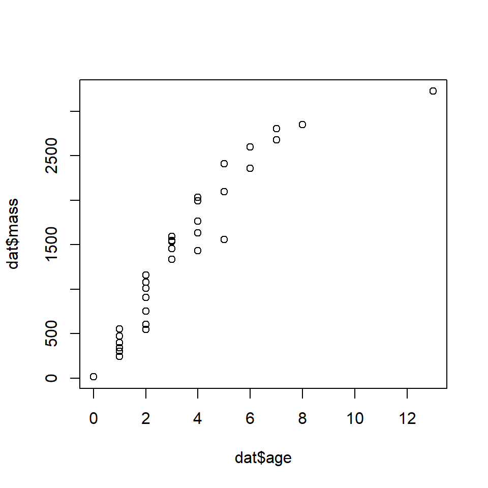
In a previous section we fit Gompertz and von Bertalanffy growth curves to the data. The Gompertz curve fit slightly better than the von Bertalanffy curve. The final Gompertz curve and the data are shown below:
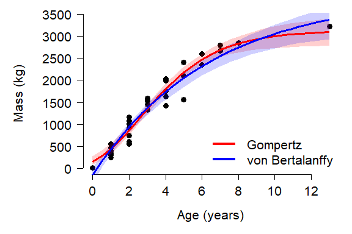
If we didn’t know about the Gompertz growth model, or had no idea what curve to start with, we could start by fitting GAMs to get a sense of the kind of curve we need. This is sometimes better than just plotting the data and eyeballing a curve. Fit the GAMs with the function gam().
## Loading required package: nlme## This is mgcv 1.9-0. For overview type 'help("mgcv-package")'.##
## Family: gaussian
## Link function: identity
##
## Formula:
## mass ~ s(age)
##
## Parametric coefficients:
## Estimate Std. Error t value Pr(>|t|)
## (Intercept) 1351.14 34.37 39.31 <2e-16 ***
## ---
## Signif. codes: 0 '***' 0.001 '**' 0.01 '*' 0.05 '.' 0.1 ' ' 1
##
## Approximate significance of smooth terms:
## edf Ref.df F p-value
## s(age) 2.887 3.535 182.7 <2e-16 ***
## ---
## Signif. codes: 0 '***' 0.001 '**' 0.01 '*' 0.05 '.' 0.1 ' ' 1
##
## R-sq.(adj) = 0.95 Deviance explained = 95.4%
## GCV = 46522 Scale est. = 41356 n = 35Notice that the usual coefficients table is split into two parts: one for the intercept, and another for the smoother terms. The s(age) term in the model formula is how we requested a smoother on age. Without the s() function, we would get a linear term. The model summary also returns a pseudo-R2 based on deviance.
Next, we get the model predictions in the usual way:
px <- seq(min(dat$age), max(dat$age), length=100)
pred <- predict(mod1, newdata=data.frame(age=px),
type="response", se.fit=TRUE)The values in pred reveal a problem: the model predicts negative values! We probably should have used a log-link function to ensure positivity in the response.
##
## Family: gaussian
## Link function: log
##
## Formula:
## mass ~ s(age)
##
## Parametric coefficients:
## Estimate Std. Error t value Pr(>|t|)
## (Intercept) 6.94435 0.05751 120.7 <2e-16 ***
## ---
## Signif. codes: 0 '***' 0.001 '**' 0.01 '*' 0.05 '.' 0.1 ' ' 1
##
## Approximate significance of smooth terms:
## edf Ref.df F p-value
## s(age) 5.492 6.532 48.21 <2e-16 ***
## ---
## Signif. codes: 0 '***' 0.001 '**' 0.01 '*' 0.05 '.' 0.1 ' ' 1
##
## R-sq.(adj) = 0.949 Deviance explained = 95.7%
## GCV = 52451 Scale est. = 42723 n = 35Now make the predictions but on the link scale, which we can back-transform.
px <- seq(min(dat$age), max(dat$age), length=100)
pred <- predict(mod2, newdata=data.frame(age=px),
type="link", se.fit=TRUE)
mn <- pred$fit
lo <- exp(qnorm(0.025, mn, pred$se.fit))
up <- exp(qnorm(0.975, mn, pred$se.fit))
mn <- exp(mn)Now make a plot. Compare this to the equivalent plot from the Gompertz model fit above.
par(mfrow=c(1,1), mar=c(5.1, 7.1, 1.1, 1.1),
las=1, lend=1, bty="n",
cex.axis=1.3, cex.lab=1.3)
# make the plot
plot(dat$age, dat$mass,
pch=16, cex=1.2,
xlab="Age (years)",
ylab="", ylim=c(0,4000))
title(ylab="Mass (kg)", line=5)
points(px, lo, type="l", col="red", lwd=3, lty=2)
points(px, up, type="l", col="red", lwd=3, lty=2)
points(px, mn, type="l", col="red", lwd=3)Up to about 8 years of age, the GAM fit and the Gompertz fit look similar. However, above 8 years the GAM CI starts behaving strangely. This is because there are few data in that region with which to train the model. We could attempt to restrain the predictions by tweaking the model. One way is to reduce the number of “knots”, or bends in the smoother. This is done by adding an argument k to the s() function. Usually k should be \(\ge\) 2 and <n, where n is the number of observations. Try changing k in the commands below and see how the predictions change.
##
## Family: gaussian
## Link function: log
##
## Formula:
## mass ~ s(age, k = 4)
##
## Parametric coefficients:
## Estimate Std. Error t value Pr(>|t|)
## (Intercept) 6.99435 0.05263 132.9 <2e-16 ***
## ---
## Signif. codes: 0 '***' 0.001 '**' 0.01 '*' 0.05 '.' 0.1 ' ' 1
##
## Approximate significance of smooth terms:
## edf Ref.df F p-value
## s(age) 2.937 2.997 86.4 <2e-16 ***
## ---
## Signif. codes: 0 '***' 0.001 '**' 0.01 '*' 0.05 '.' 0.1 ' ' 1
##
## R-sq.(adj) = 0.933 Deviance explained = 93.8%
## GCV = 63276 Scale est. = 56159 n = 35px <- seq(min(dat$age), max(dat$age), length=100)
pred <- predict(mod3, newdata=data.frame(age=px),
type="link", se.fit=TRUE)
mn <- pred$fit
lo <- exp(qnorm(0.025, mn, pred$se.fit))
up <- exp(qnorm(0.975, mn, pred$se.fit))
mn <- exp(mn)
par(mfrow=c(1,1), mar=c(5.1, 7.1, 1.1, 1.1),
las=1, lend=1, bty="n",
cex.axis=1.3, cex.lab=1.3)
# make the plot
plot(dat$age, dat$mass,
pch=16, cex=1.2,
xlab="Age (years)",
ylab="", ylim=c(0,4000))
title(ylab="Mass (kg)", line=5)
points(px, lo, type="l", col="red", lwd=3, lty=2)
points(px, up, type="l", col="red", lwd=3, lty=2)
points(px, mn, type="l", col="red", lwd=3)
Selecting the optimal number of knots is bit of an art as well as a science. Using too many knots places your model at risk of overfitting. Using too few knots risks not capturing a biologically relevant pattern. The best option is probably to fit the model using different numbers of knots and comparing them using AIC or predictive performance. For example:
mod.1 <- gam(mass~s(age), data=dat, family=gaussian(link="log"))
mod.2 <- gam(mass~s(age, k=2), data=dat, family=gaussian(link="log"))## Warning in smooth.construct.tp.smooth.spec(object, dk$data, dk$knots): basis dimension, k, increased to minimum possiblemod.3 <- gam(mass~s(age, k=3), data=dat, family=gaussian(link="log"))
mod.4 <- gam(mass~s(age, k=4), data=dat, family=gaussian(link="log"))
mod.5 <- gam(mass~s(age, k=5), data=dat, family=gaussian(link="log"))
mod.6 <- gam(mass~s(age, k=6), data=dat, family=gaussian(link="log"))
mod.7 <- gam(mass~s(age, k=7), data=dat, family=gaussian(link="log"))
AIC(mod.1, mod.2, mod.3, mod.4, mod.5, mod.6, mod.7)## df AIC
## mod.1 7.491541 480.3155
## mod.2 3.984267 501.6689
## mod.3 3.984267 501.6689
## mod.4 4.936648 487.7807
## mod.5 5.896483 480.4869
## mod.6 6.851747 477.4232
## mod.7 7.161195 478.513111.6.4 Classification and regression trees (CART)
The final alternative to NLS that we will explore is classification and regression trees (CART). CART is really a family of methods that use nonparametric partitioning to either place observations into categories (classification trees) or predict their numeric values (regression trees). A typical regression tree is shown below (De’ath and Fabricius 2000):
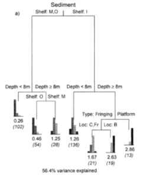
The tree predicts sediment thickness around coral reefs (as an ordinal variable) using two factors (shelf and reef type) and a numerical predictor (depth). The expected value for each observation is determined by going down the tree, selecting the correct statement about that observation. For example, an observation on the outer shelf (shelf = O), at 12 m depth, would have expected sediment thickness 0.46 (so values 0 or 1 would be most common). Each decision point is called a “node”; the predicted values are at the terminal nodes (or “leaves”). In this tree, the distribution of response values at each leaf is shown.
Tree-based models can describe patterns where there is no simple data model (e.g., curve shape), or where there are complex interactions between predictor variables (interactions manifest as effects being nested within each other). Tree-based models have the disadvantage that they require large amounts of data and can be difficult to present and interpret. Worse, it can be difficult to distinguish between a tree-based model that explains a high proportion of variation in the data, and a model that is badly overfit (i.e., fitting random noise). Cross-validation can help with this problem but is no guarantee of a robust fit.
Another name for these kinds of tree-based models is “recursive partitioning”. This means that the models partition the data over and over until homogenous groups are found. The main R package for CART is rpart (Therneau and Atkinson 2019).
11.6.4.1 Classification tree example with real data
Hutcheon et al. (2002) reported data on brain morphology and lifestyle from 63 species of bats. Their dataset contains the following variables:
| Variable | Meaning |
|---|---|
species |
Species |
family |
Taxonomic family |
diet |
Herbivore, gleaner, hawker, or vampire |
bow |
Body weight (g) |
brw |
Brain weight (\(\mu\)g) |
aud |
Auditory nuclei volume (mm3) |
mob |
Main olfactory bulb volume (mm3) |
hip |
Hippcampus volume (mm3) |
Import the dataset bat_data_example.csv. You can download it here. The code below requires that you have the file in your R working directory.
We are interested in whether the relative sizes of different brain components are related to diet. Statistically, we are testing whether any combination of brain component sizes can correctly classify diet type.
Let’s briefly explore the data. First, we can see how the variables are related to each other. We can do that with a scatterplot matrix.
panel.cor <- function(x, y, digits = 2,
prefix = "", cex.cor, ...){
r <- cor(x, y, use="complete.obs")
txt <- format(c(r, 0.123456789), digits = digits)[1]
txt <- paste0(prefix, txt)
if(missing(cex.cor)) cex.cor <- 0.8/strwidth(txt)
text(0.5, 0.5, txt, cex = cex.cor * abs(r))
}
pairs(dat[,meas.cols],
lower.panel = panel.smooth,
upper.panel = panel.cor,
gap=0)
What these correlations mean is that the variables are redundant with each other, and with overall size (body mass, bow). This makes a lot of sense for morphometric data. We need to keep this in mind as we analyze the data.
It might make sense to log-transform the data because we are working with measurements (which cannot be negative). Log-scale data will also be more normally distributed, which is not necessary for CART but can be more convenient.
In addition, we should we can factor out the effect of overall brain size. This will make it so that any patterns we see are not just a result of brain size. Below we use the geometric mean of the three brain volumes as the “total brain size” because the variable brw contains many other components (and is a mass, not a volume). Note that the mean of the log-transformed values is really the geometric mean, not the arithmetic mean.
vols <- meas.cols[-c(1:2)]
dat$geom <- apply(dat[,vols], 1, mean)
dat[,vols] <- apply(dat[,vols], 2, function(x){x/dat$geom})Remake the scatterplot matrix and observe that the three brain volumes are no longer so strongly correlated.
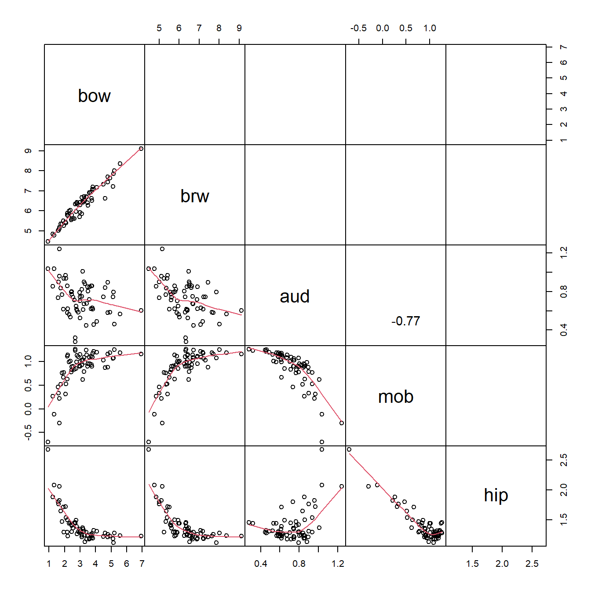
Now we should be ready to fit a classification tree. The syntax is simple (and similar to a GLM):
library(rpart)
set.seed(123)
mod1 <- rpart(diet~bow+aud+mob+hip, data=dat)
par(mfrow=c(1,1), mar=c(0.5, 0.5, 0.5, 0.5), xpd=NA)
plot(mod1)
text(mod1, use.n=TRUE, all=TRUE)
The default plot isn’t very attractive, but it does the job. A nicer version is hard to make in R, but can be assembled in Powerpoint or your favorite drawing program very easily. The tree summarizes graphically how the algorithm partitioned the data:
- If mob \(\ge\) 0.9589, classify as herbivore.
- If mob < 0.9589 AND aud < 0.7689, classify as gleaner.
- If mob < 0.9589 AND aud \(\ge\) 0.7689, classify as hawker (aerial predator).
For each observation, start at the top and go LEFT if the statement at a node is true, and right if the statement is false. The numbers at each terminal node show the number of observations from each category that wound up at that node. For example, 32 observations were classified as herbivores, and 28 of them were correct (0/2/28/2). We can also see that 22 out of 24 observations classified as hawkers by the model were actually hawkers. The confusion matrix for the model is obtained by making a frequency table of the predicted classifications and the actual classifications. The table below puts the predictions on the columns and the actual diets on the rows.
## pred gleaner hawker herbivore vampire
## dat$diet
## gleaner 4 1 0 0
## hawker 3 22 2 0
## herbivore 0 1 28 0
## vampire 0 0 2 011.6.4.2 Regression tree example with real data
We’ll use the bat data again to construct a simple regression tree. Can we predict main olfactory bulb volume from diet and other facts about a species? Load the bat data from above and go through the steps of log-transforming and relativizing to overall mass.
Now fit the model and plot it:
mod2 <- rpart(mob~diet+bow, data=dat)
par(mfrow=c(1,1), mar=c(0.5, 0.5, 0.5, 0.5), xpd=NA)
plot(mod2)
text(mod2, use.n=TRUE, all=TRUE)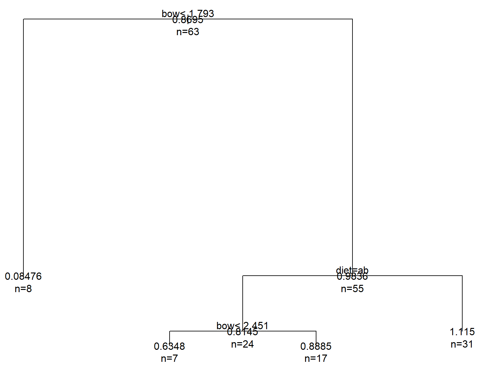
The regression tree predicts the mean response variable at each terminal node. The logic of how to follow the tree to classify each observation is similar to before. At each node, go left when the statement is true and right when it is false. Factor levels are identified by letters corresponding to their order (usually alphabetical; check levels(factor(dat$diet))). Keep in mind that the values are all on the all on the log scale, because we transformed the values. Another option would have been to standardize the values.
The interpretation of this tree is as follows:
- Overall mean = 0.8695, n = 63 (top node)
bow< 1.793 \(\rightarrow\) 8 observations with mean = 0.08476bow\(\ge\) 1.793 and diet = gleaner (a) or hawker (b) \(\rightarrow\) 31 observations with mean = 1.115bow\(\ge\) 1.793 and diet \(\neq\) gleaner or hawker\(\rightarrow\) and bow < 2.451 \(\rightarrow\) 7 observations with mean = 0.6348bow\(\ge\) 1.793 and diet \(\neq\) gleaner or hawker\(\rightarrow\) and bow \(\ge\) 2.451 \(\rightarrow\) 17 observations with mean = 0.8885
We can visually inspect the effectiveness of the tree by plotting the predicted vs. observed values:
pred <- predict(mod2, type="vector")
pchs <- 15:18
diets <- sort(unique(dat$diet))
use.pch <- pchs[match(dat$diet, diets)]
plot(dat$mob, jitter(pred), pch=use.pch)
abline(a=0, b=1, col="red")
legend("topleft", legend=diets, pch=pchs)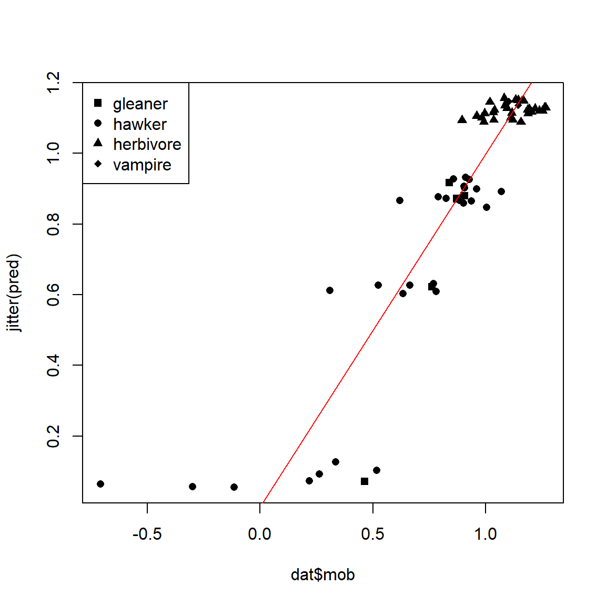
Remember that regression trees only predict the mean within each group, not individual values. A good regression tree will have a relatively small spread within each group; the tree we just fit is not very good.
Better results can be obtained with random forests (Cutler et al. 2007, Brieuc et al. 2018) and boosted regression trees (BRT) (De’ath 2007, Elith et al. 2008). BRT use not one but many trees to obtain a more robust fit. Both of those techniques are powerful and underutilized in biology…but that is changing. At some point I’ll produce a page demonstrating BRT. James et al. (2013) contains primers on these and other machine learning techniques.
Literature Cited
As an ecologist, I have never fit a Michaelis-Menten model for enzyme kinetics :)↩︎
Infuriatingly, the base function
predict.nls()takesse.fitas an argument, but ignores it. This has been the case since I was grad student learning about nonlinear models.↩︎Dummy variables are really a way to manipulate the matrix algebra underlying the model-fitting process. Usually, a factor with n levels will be encoded by \(n-1\) dummy variables where each observation has a 1 in at most one of the dummies—the dummy corresponding to the group they belong to. An observation with 0s for all dummies is interpreted as being in the control or baseline group. This example uses a slightly different approach to dummy coding where each level corresponds to one dummy variable and each observation has value 1 for exactly 1 dummy. The first method (\(n-1\) dummies) leads to an effects parameterization of the model, where effects are presented as changes from the baseline (e.g., as seen in R’s
lm()outputs). The second method (n dummies) produces a means parameterization of the model, where parameter estimates are presented as group- or level-specific point estimates.↩︎Image: https://www.flower-db.com/en/flowers/lolium-perenne) (accessed 2021-09-24)↩︎
{kind=link}